Capitolo 6 Variabili Casuali
6.1 Definizione formale di una VC discreta
Si consideri un partizione finita o al più numerabile dell’evento certo:
\[ \{E_1,...,E_k\},~E_i\cap E_j,~\forall i\ne j, ~E_1\cup...\cup E_k=\Omega \]
Una VC \(X\) è una funzione che mappa la partizione sulla retta reale \[X:\Omega\to\mathbb{R}\]. \[X(E_j)=x_j,~\text{ad ogni evento $E_j$ viene assegnato un numero}\]
Si definisce \(S_X\) il supporto della VC \(X\), ed è l’insieme dei valori che la VC è suscettibile di assumere.
Resta definita la funzione di probabilità di \(X\) che è data da:
\[ f(x)=P(X=x)=P(E_j:X(E_j)=x) \]
Una variabile casuale \(X\) è un numero che ancora non sappiamo quanto varrà, potrà assumere uno qualunque dei valori \(x\) del supporto \(S_X\) e lo assumerà con una data probabilità \(f(x)=P(X=x)\).
Esempio 6.1 Consideriamo il lancio di due monete identiche, la partizione associata è
- \(E_1=\{T,T\}\), la prima e la seconda moneta mostrano Testa.
- \(E_2=\{T,C\}\), la prima moneta mostra Testa e la seconda Croce.
- \(E_3=\{C,T\}\), la prima moneta mostra Croce e la seconda Testa.
- \(E_4=\{C,C\}\), la prima e la seconda moneta mostrano Croce.
Si considerino le tre variabili nella tabella qui sotto
| \(j\) | \(E_j\) | \(X(E_j)\) | \(Y(E_j)\) | \(W(E_j)\) |
|---|---|---|---|---|
| 1 | \(E_1=\{T,T\}\) | \(X(E_1)=2\) | \(Y(E_1)=0\) | \(W(E_1)=1\) |
| 2 | \(E_2=\{T,C\}\) | \(X(E_2)=1\) | \(Y(E_2)=1\) | \(W(E_2)=0\) |
| 3 | \(E_3=\{C,T\}\) | \(X(E_3)=1\) | \(Y(E_3)=1\) | \(W(E_3)=0\) |
| 4 | \(E_4=\{C,C\}\) | \(X(E_4)=0\) | \(Y(E_4)=2\) | \(W(E_4)=1\) |
\(X\) conta il numero di Teste (0, 1 o 2), \(Y\) conta il numero di Croci (0, 1 o 2), \(W\) vale uno se i due lanci sono identici e vale zero altrimenti.
Se la moneta è perfetta (\(P(T)=P(C)=0.5\)) allora:
\[\begin{eqnarray*} P(E_1) &=& P(\{C,C\}) \\ &=& P(C)P(C), \qquad \text{in virtù dell'indipendenza}\\ &=& \frac 12 \cdot \frac 12 = \frac 14 \\ P(E_2) &=& P(\{T,C\})\\ &=& P(T)P(C), \qquad \text{in virtù dell'indipendenza}\\ &=& \frac 12 \cdot \frac 12 = \frac 14 \\ P(E_3) &=& P(\{C,T\})\\ &=& P(C)P(T), \qquad \text{in virtù dell'indipendenza}\\ &=& \frac 12 \cdot \frac 12 = \frac 14 \\ P(E_4) &=& P(\{T,T\})\\ &=& P(T)P(T), \qquad \text{in virtù dell'indipendenza}\\ &=& \frac 12 \cdot \frac 12 = \frac 14 \end{eqnarray*}\]
e quindi:
\[\begin{eqnarray*} P(X=0) &=& P(E_1) \\ &=&\frac 14\\ P(X=1) &=& P(E_2\cup E_3)\\ &=& P(E_2)+P(E_3)\\ &=& \frac 14+\frac 14 = \frac 24\\ P(X=2) &=& P(E_4) \\ &=&\frac 14. \end{eqnarray*}\]
6.1.1 Descrizione di una VC
Un \(X\) VC ho molte analogie con una VS, \(X\) ha un supporto ovvero l’insieme dei valori che \(X\) può assumere, una funzione d probabilità che produce numeri compresi tra zero e uno che sommano ad uno (come le frequenze relative), la Funzione di Ripartizione che, anziché cumulare le frequenze, cumula le probabilità, il Valore Atteso che è l’analogo della media e la Varianza che è l’analogo della varianza descrittiva. In sintesi
Una VC discreta è identificata in maniera univoca da
- Il suo supporto \(S_X\).
- La sua funzione di probabilità \(f(x)\) o la su funzione di ripartizione \(F\).
- Il suo valore atteso \(E(X)\).
- La sua varianza \(V(X).\)
Definizione 6.1 (Supporto) Sia \(X\) una VC, si definisce \(S_X\) il supporto di \(X\), l’insieme di tutti i possibili valori che \(X\) è suscettibile di assumere.
Esempio 6.2 Lancio una moneta due volte e definisco \(X\) la VC che conta il numero di volte che osservo Testa in due lanci. La VC \(X\) potrà assumete solo 3 valori: 0 (zero volte Testa in due lanci), 1 (una volta Testa in due lanci), e 2 (2 volte Testa in due lanci). E quindi \[ S_X=\{0,1,2\} \]
Definizione 6.2 (Funzione di Probabilità) Sia \(X\) una VC con supporto \(S_X\), si definisce \(f\) la funzione di probabilità: è la probabilità che la VC \(X\) assuma esattamente il valore \(x\) \[ f(x)=P(X=x), ~x\in S_X \]
Esempio 6.3 Si consideri un’urna che contiene 4 palline: \[E_1=\fbox{1},E_2=\fbox{2},E_3=\fbox{2},E_4=\fbox{3}\] Sia \(X\) la VC che rappresenta il numero sulla pallina:
\[\begin{eqnarray*} X(E_1) &=& 1\\ X(E_2) &=& 2\\ X(E_3) &=& 2\\ X(E_4) &=& 3 \end{eqnarray*}\]
ha come supporto: \[S_X = \{1,2,3\}\] e come funzione di probabilità: \[\begin{eqnarray*} f(1)&=&P(X=1)=P(E_1)=\frac 1 4\\ f(2)&=&P(X=2)=P(E_2\cup E_3)=\frac 1 4+\frac 1 4=\frac 2 4\\ f(3)&=&P(X=3)=P(E_3)=\frac 1 4 \end{eqnarray*}\]
La funzione di probabilità \(f\) si comporta come le frequenze relative, la \(f\) è compresa tra zero e uno, per ogni \(x\) e la somma della \(f\) calcolata su ogni \(x\) dà uno.
Proprietà 6.1 (Funzione di probabilità) Sia \(X\) una VC con supporto \(S_X\) e funzione di probabilità \(f\), allora
- \(0\le f(x)\le1,\forall x\in S_X\)
- \(\sum_{x\in S_X} f(x) = 1.\)
La Funzione di Ripartizione \(F\) di una VC \(X\) cumula tutta la probabilità fino ad \(x\):
Definizione 6.3 (Funzione di Ripartizione di una VC) \[ F(x)=P(X\le x)=\sum_{x^*\le x} f(x^*) \]
Esempio 6.4 (Continua) Continuando l’esempio precedente: \[\begin{eqnarray*} F(x)&=&P(X\le x)\\ &=&\begin{cases} 0, &x<1\\ \frac 1 4, &1\le x<2\\ \frac 3 4 &2\le x< 3\\ \frac 4 4 & x\ge 3 \end{cases} \end{eqnarray*}\]
La funzione di ripartizione gode di diverse proprietà. Una, in particolare sarà utilissima per il calcolo delle probabilità della VC continua che vedremo più avanti.
Proprietà 6.2 (Funzione di Ripartizione) La funzione di ripartizione \(F\) di una VC \(X\) è, per definizione: \[F(x)=P(X\leq x)\] \(F\) gode delle seguenti proprietà:
- Non decrescente, ossia \(x_{1}<x_{2} \Rightarrow F(x_{1}) \le F(x_{2})\)
- \(\lim_{x\to -\infty} F(x) = 0\), \(\lim_{x\to\infty} F(x) = 1\).
- Continua a destra, ossia \(\lim_{x\to x_{0}^{+}} F(x) = F(x_{0})\).
- \(P(a < X \le b) = F(b) - F(a)\).
La funzione di ripartizione di una VC si comporta la funzione di ripartizione di una VS. Altre caratteristiche si possono calcolare, come i percentili di ordine \(p\): Il percentile \(x_p\) è quel valore che divide la distribuzione di \(X\) in due: \(P(X\le x_p)=p,~~~P(X>x_p)=1-p\)
Definizione 6.4 (Percentie di una VC) Sia \(X\) una VC con support \(S_X\) e con Fuzione di Ripartizione \(F\), si definisce il \(p\)-esimo percentile di \(X\), il vaolre \(x_p\), tale che: \[ x_p:F(x_p)=p \]
La distribuzione può essere rappresentata graficamente con un istogramma di densità. Esattamente come per la VC quantitative discrete una VC può essere rappresentata in intervalli di ampiezza uno costruiti intorno ai dati del supporto. Nel nostro esempio di prima:
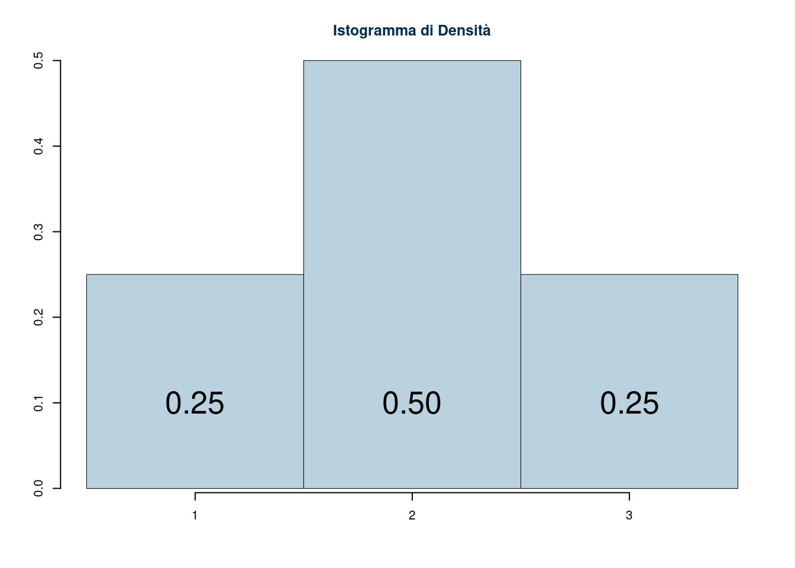
Analogamente possiamo costruire la funzione di ripartizione cumulando le probabilità. Nell’esempio di sopra otterremmo:
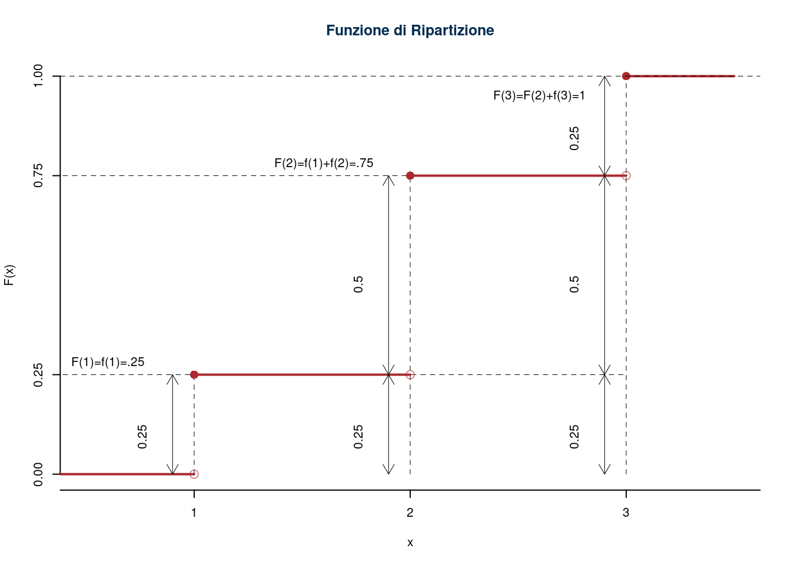
6.1.2 Operazioni tra VC
Le VC sono numeri che non sappiamo in anticipo che valore assumeranno. Ma siccome diventeranno numeri li potremo sommare, sottrarre, moltiplicare, ecc. sia con numeri costanti che con altre VC.
Esempio 6.5 Sia \(X\) la VC con supporto \(S_X=\{-1,0,+1\}\) e con funzione di probabilità \[\begin{eqnarray*} f(-1)&=& \frac 15\\ f(0)&=&\frac 35\\ f(+1)&=&\frac 15 \end{eqnarray*}\] e sia \(Y\) la VC con supporto \(S_Y=\{0,+1\}\) e con funzione di probabilità \[\begin{eqnarray*} f(0)&=&\frac 12\\ f(+1)&=&\frac 12 \end{eqnarray*}\]
Se poniamo \[ S=X+Y \] \(S\) è la VC che rappresenta la somma di due VC: casuale è \(X\), casuale è \(Y\), casuale sarà la somma tra \(X\) ed \(Y\).
\[ \begin{array}{ r|rrrrrr } & -1 ;&\color{blue}{ \frac{ 1 } { 5 }} & 0 ;&\color{blue}{ \frac{ 3 } { 5 }} & 1 ;&\color{blue}{ \frac{ 1 } { 5 }} \\ \hline 0 ;\color{blue}{ 1 / 2 }& -1;&\color{red}{\frac{1}{10}}& 0;&\color{red}{\frac{3}{10}}& 1;&\color{red}{\frac{1}{10}}\\ 1 ;\color{blue}{ 1 / 2 }& 0;&\color{red}{\frac{1}{10}}& 1;&\color{red}{\frac{3}{10}}& 2;&\color{red}{\frac{1}{10}}\\ \end{array} \]
E ricaviamo la distribuzione di, S
\[ \begin{array}{ r|rrrr } S & -1& 0& 1& 2 \\ \hline P( S ) & \frac{1}{10}& \frac{4}{10}& \frac{4}{10}& \frac{1}{10} \\ \end{array} \]
6.2 Valore Atteso, e Varianza di una VC
Il valore atteso di una VC \(X\) è l’analogo della media aritmetica di una VC, le modalità di \(X\) vengono pesate con le probabilità invece che con le frequenze.
Definizione 6.5 (Valore Atteso di una VC discreta) Si definisce \(E(X)\) il valore atteso della VC \(X\) con supporto \(S_X\) e funzione di probabilita \(f\): \[ E(X)=\sum_{x\in S_x}xf(x) \]
Il valore atteso di una VC è un numero.
La varianza di una VC è del tutto analoga alla varianza di una VS.
Definizione 6.6 (Varianza di una VC discreta) Si definisce \(V(X)\) la varianza della VC \(X\) con supporto \(S_X\) e funzione di probabilita \(f\): \[\begin{eqnarray*} V(X)&=&E\left(\big(X-E(X)\big)^2\right)\\ &=&\sum_{x\in S_x}(x-E(X))^2f(x),\qquad\text{oppure equivalentemente}\\ &=& E(X^2)-E^2(X)\\ &=&\sum_{x\in S_X}x^2f(x)-E^2(X). \end{eqnarray*}\]
così come la sua standard deviation.
Definizione 6.7 (Standard Deviation di una VC discreta) Si definisce \(SD(X)\) la Standard Deviation della VC \(X\) con supporto \(S_X\) e funzione di probabilita \(f\), la radice della sua varianza \[\begin{eqnarray*} SD(X)&=&\sqrt{V(X)} \end{eqnarray*}\]
Esempio 6.6 (Continua) Continuiamo l’esempio precedente e otteniamo, il valore atteso: \[ E(X)=1\cdot\frac 1 4 +2\cdot\frac 2 4+3\cdot\frac 1 4=2 \] e la varianza di \(X\) \[ V(X)=1^2\cdot\frac 1 4 +2^2\cdot\frac 2 4+3^2\cdot\frac 1 4 - 2^2= 0.5 \]
Le proprietà di valore atteso e varianza di una VC sono del tutto analoghe alle rispettive di una VS.
Proprietà 6.3 (Proprietà del Valore Atteso di una VC) Le proprietà del valore atteso, \(E(X)\) sono:
- \(x_{\min} \leq E(X) \leq x_{\max}, \quad x_{\min},\ x_{\max}\in S_{X}\),
- \(E\Big(X - E(X)\Big) = 0\),
- \(E\Big(X - E(X)\Big)^{2} < E(X - d)^{2} \quad\forall\ d \ne E(X)\),
- \(E(a + b X) = a + b\ E(X)\).
- \(E(aX+bY)=aE(X)+bE(Y)\)
Esiste anche l’analogo della proprietà di associatività per il valore atteso, ma richiede alcuni risultati che esulano dallo scopo di questi appunti e non verrà riportata.
Anche per la varianza di una VC valgono le stesse proprietà della varianza di una VS. In particolare
Proprietà 6.4 (Proprietà della Varianza di una VC) Le proprietà della Varianza, \(V(X)\) sono:
- \(V(X)\geq 0\),
- \(V(X)=0\) se e solo se \(P(X=x)=1\)
- \[V(a+bX)=b^2V(X)\]
- Se \(X\) e \(Y\) sono indipendenti, allora \[V(aX+bY)=V(aX-bY)=a^2V(X)+b^2V(Y), \forall~a,b\in\mathbb{R}\]
Notiamo che nel caso di una VC \(X\) la sua varianza vale zero se e solo se la VC assume un solo valore con probabilità uno. Quindi una VC che non varia, ovvero una costante.
Se \(a=1\) e \(b=1\) allora \[V(X+Y)=V(X-Y)=V(X)+V(Y)\] le varianze non si sottraggono mai.
Proprietà 6.5 (Proprietà della SD di una VC) Le proprietà della Standard Deviation di \(X\), \(SD(X)\) sono:
- \(SD(X)\geq 0\),
- \(SD(X)=0\) se e solo se \(P(X=x)=1\)
- \[SD(a+bX)=|b|V(X)\]
- Se \(X\) e \(Y\) sono indipendenti, allora \[SD(aX+bY)=SD(aX-bY)=\sqrt{a^2V(X)+b^2V(Y)}, \forall~a,b\in\mathbb{R}\]
Se \(a=1\) e \(b=1\) allora \[SD(X+Y)=SD(X-Y)=\sqrt{V(X)+V(Y)}\] la SD di una somma non si esprime come la comma delle SD degli addendi.
6.3 Indipendenza tra VC
In generale due VC \(X\) e \(Y\) si dicono indipendenti se e solo se: \[P(X\in A\cap Y\in B)=P(X\in A)\cdot P(Y\in B),~~\forall A \subset S_X,\forall B \subset S_Y\] Per le VC discrete la relazione di indipendenza si può scrivere: \[P(X=x\cap Y=y)=P(X=x)\cdot P(Y=y),~~~\forall x \in S_X,\forall y \in S_Y\]
6.4 VC condizionate (complementi)
La probabilità condizionata di \(X\) dato \(Y\) si scrive \[ P(X\in A|Y\in B)=\frac{P(X\in A\cap Y\in B)}{P(Y\in B)} \] Se \(X\) e \(Y\) sono discrete si può scrivere \[\begin{eqnarray*} f(x|y) &=& P(X=x|Y=y)\\ &=&\frac{P(X=x\cap Y=y)}{P(Y=y)} \end{eqnarray*}\] e si legge: la probabilità che \(X\) assuma il valore \(x\) dato che \(Y\) ha assunto il valore \(y\) è \(f(x|y)\).
6.4.1 Valore atteso e varianza condizionata (complementi)
Sia \(X\) una VC discreta con supporto \(S_X\). Si definisce il valore atteso di \(X\) condizionato ad \(Y=y\), la quantità \[ E(X|Y=y)=\sum_{x\in S_X}xf(x|y) \] Si definisce varianza di \(X\) condizionato ad \(Y=y\), la quantità
\[ V(X|Y=y)=\sum_{x\in S_X}(x-E(X|Y=y))^2f(x|y) \]
6.4.2 Esempio di indipendenza tra VC
Sia \(Y\) una VC con supporto \(S_Y=\{-1,+1\}\) e con funzione di probabilità \[\begin{eqnarray*} f_Y(-1) &=& \frac 1 2\\ f_Y(+1) &=& \frac 1 2 \end{eqnarray*}\] la Y al piede della f serve a non confondere la funzione di probabilità della Y con quella della X. Se \(X\) ed \(Y\) sono indipendenti allora: \[\begin{eqnarray*} P(X=x\cap Y=y) &=& f(x,y)\\ &=& f_X(x)f_Y(y) \end{eqnarray*}\]
| \(\phantom{.}\) | \(f_X(1)=\frac 1 4\) | \(f_X(2)=\frac 2 4\) | \(f_X(3)=\frac 1 4\) |
|---|---|---|---|
| \(f_Y(-1)=\frac 1 2\) | \(f(1,-1)=0.125\) | \(f(2,-1)=0.25\) | \(f(3,-1)=0.125\) |
| \(f_Y(+1)=\frac 1 2\) | \(f(1,+1)=0.125\) | \(f(2,+1)=0.25\) | \(f(3,+1)=0.125\) |
6.5 Specchietto finale per le VC discrete
\[\begin{align*} S_X& & & \text{il supporto della VC $X$:} \\ & & & \text{l'insieme di tutti i possibili valori che la VC può assumere. } \\ & & & \text{Se $X$ è una VD discreta il suo supporto ha:} \\ S_X&=\{x_1,...,x_k\} & & \text{un numero finito, } \\ S_X&=\{x_1,x_2,x_3,...\} & & \text{o al più numerabile di elementi.} \\ f(x)&=P(X=x),~x\in S_X & & \text{$f$ è la funzione di probabilità,} \\ & & & \text{indica la probabilità che la VC $X$ assuma esattamente il valore $x$.} \\ E(a+bX)&=a+bE(X) & & \text{linearità} \\ E(aX+bY)&=aE(X)+bE(Y) & & \\ V(X)&=E\left(\big(X-E(X)\big)^2\right) & & \text{Varianza della VC $X$} \\ &=\sum_{x\in S_X}x^2f(x)-E^2(X) & & \\ V(a+bX)&=b^2V(X) & & \\ SD(X)&=\sqrt{V(X)} & & \text{Standard Deviation della VC $X$} \\ SD(a+bX)&=|b| SD(X) & & \\ \text{Indipendenza tra VC}& & & \\ P(X\in A\cap Y\in B)&=P(X\in A)\cdot P(Y\in B) & & \forall A \subset S_X,\forall B \subset S_Y \\ P(X=x\cap Y=y)&=P(X=x)\cdot P(Y=y) & & \forall x \in S_X,\forall y \in S_Y \\ V(aX+bY)&=a^2V(X)+b^2V(Y) & & \text{se e solo se $X$ e $Y$ sono indipendenti} \\ SD(aX+bY)&=\sqrt{a^2V(X)+b^2V(Y)} & & \text{se e solo se $X$ e $Y$ sono indipendenti. } \\ & & & \text{n.b. la SD di una somma non } \\ & & & \text{si può esprimere con la somma delle SD.} \end{align*}\]
6.6 Le VC continue
Le VC che hanno un supporto più che numerabile, \(S_X\subseteq\mathbb{R}\), cioè un sottoinsieme della retta reale o la retta reale stessa vengono chiamate VC continue. Siccome un intervallo di numeri reali contiene una quantità più che numerabile di punti è impossibile probabilizzare tutti i punti dell’intervallo. Invece di probabilizzare i singoli numeri vengono probabilizzati gli intervalli.
Concettualmente si definiscono immaginando di mandare la precisione di una misura all’infinito. Ogni misura è un conteggio, una lunghezza si può misurare in quanti metri, o in quanti centimetri centimetri, o in quanti millimetri, ecc.
L’idea è di dividere il supporto in classi e costruire un istogramma di densità tale che l’area sottesa ad una classe si la probabilità della classe stessa. Se per esempio dividiamo l’intervallo in 11 intervalli, otteniamo, graficamente
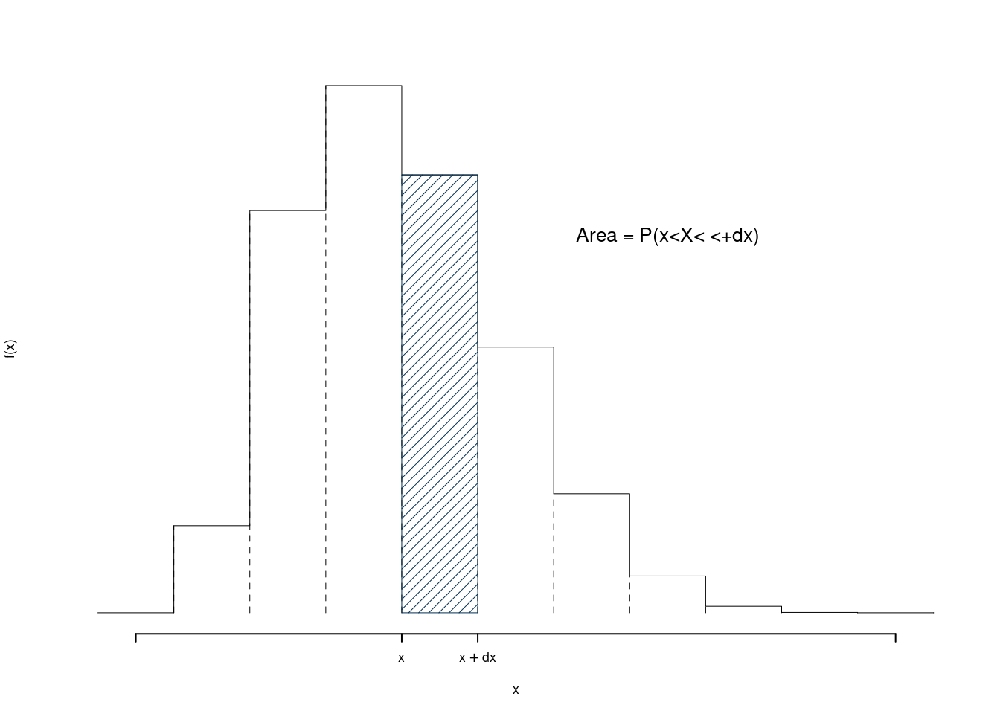
La relativa Funzione di Ripartizione \(F\) sarà
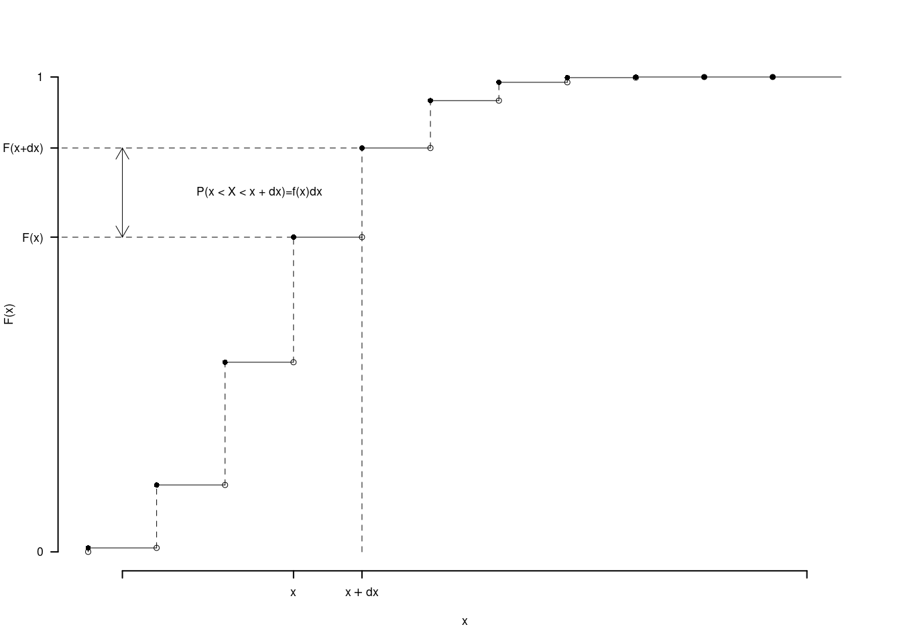
Mandare \(dx\) a zero significa farlo diventare progressivamente sempre più piccolo
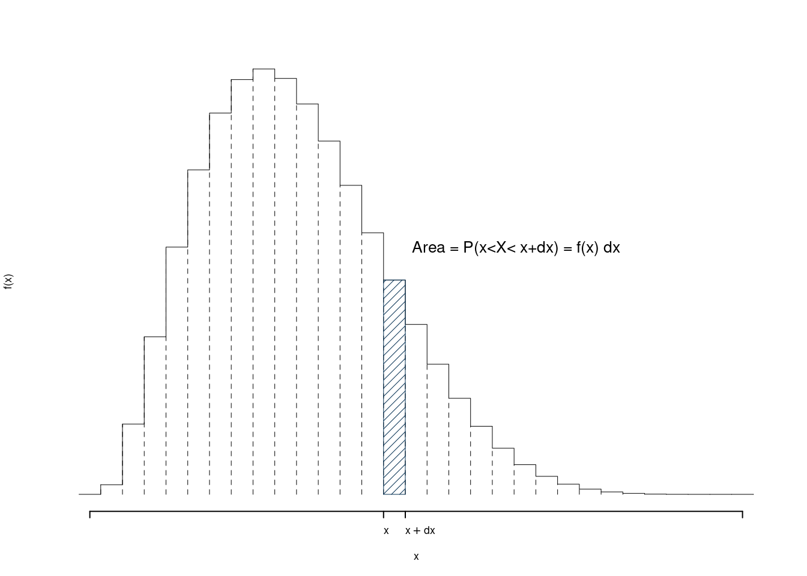
La relativa Funzione di Ripartizione \(F\) sarà
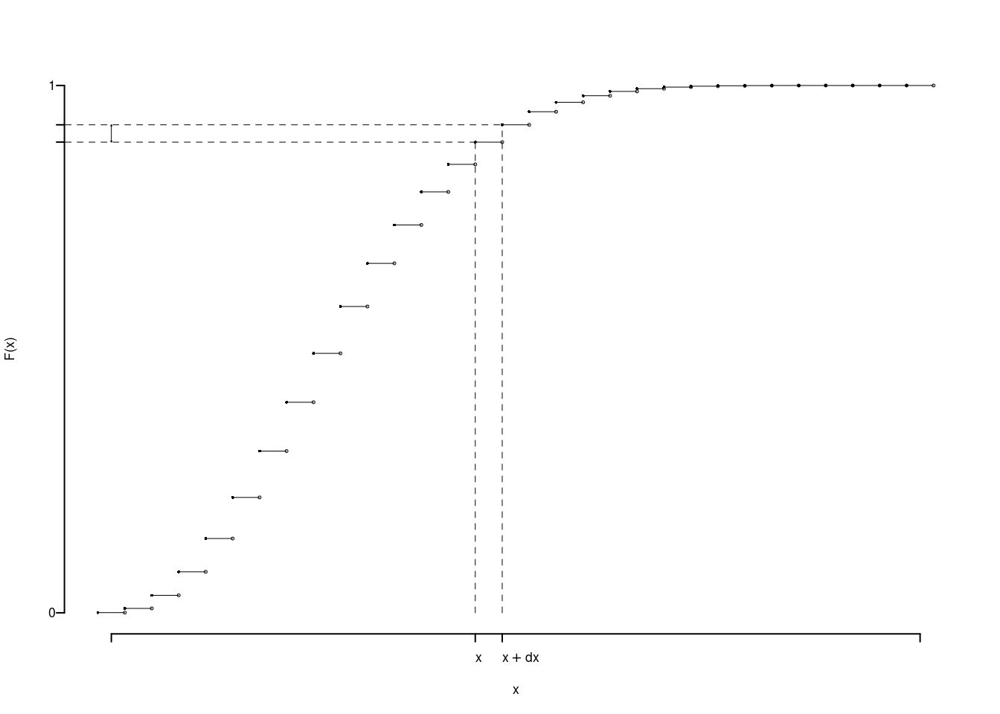
Una VC continua \(X\) è caratterizzata dal supporto \(S_X\subseteq\mathbb{R}\) e dalla funzione di densità \(f\) la cui area sottostante a \(S_X\) è uguale ad 1. \[\int_{-\infty}^{+\infty}f(x)dx=1\]
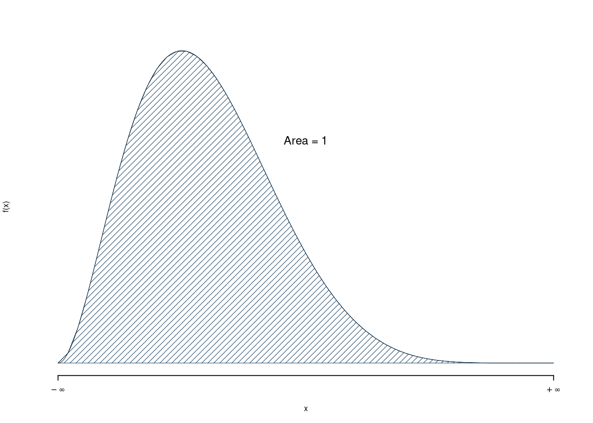
La relativa Funzione di Ripartizione \(F\) sarà
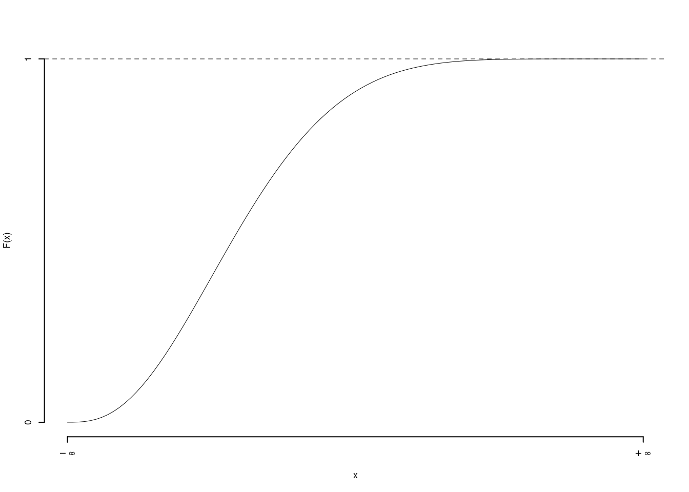
La probabilità di un intervallo qualunque \((a,b)\) è l’area sottesa ad \(f\)
\[P(a<X<b)=\int_{a}^{b}f(x)dx=F(b)-F(a)\]
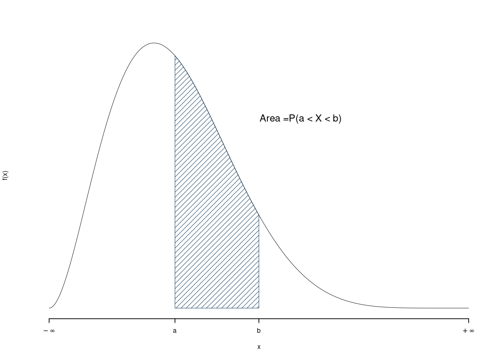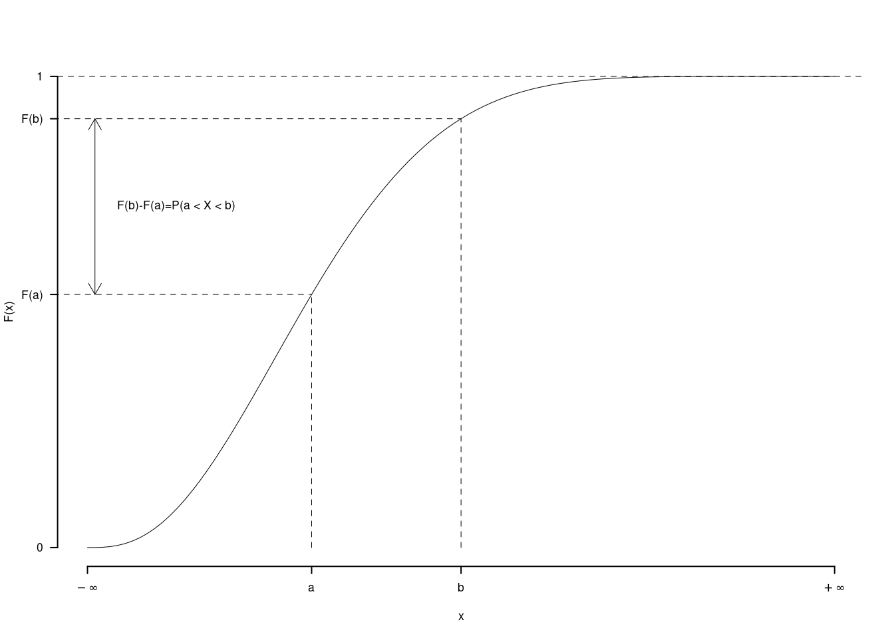
Questa applicazione esemplifica il passaggio dal discreto al continuo e il concetto di modello: VC continue.
6.6.1 Valore Atesso e Varianza di una VC continua
Se \(X\) è una VC con supporto \(S_X=(x_{\min},x_{\max})\), con \(-\infty \le x_{\min} < x_{\max} \le +\infty\), allora si definisce \[ E(X)=\int_{x_{\min}}^{x_{\max}} x f(x)dx \] e \[ V(X)=\int_{x_{\min}}^{x_{\max}} (x-E(X))^2 f(x)dx \]
6.6.2 La VC uniforme
La VC uniforme è utile per prendere confidenza con le VC continue ed è definita ne seguente modo: \(S_X=[0,1]\) e \[ f(x)= \begin{cases} 1,~~\text{se $0\le x \leq 1$}\\ 0,~~\text{altrimenti} \end{cases} \] Si tratta di una funziona a gradino che vale uno nell’intervallo [0,1] e zero altrove.
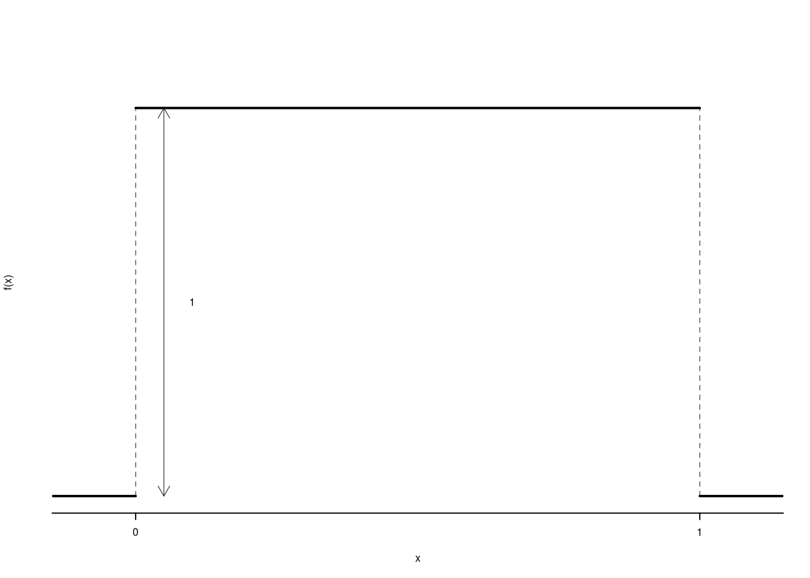
La sua funzione di ripartizione è \[ F(x) = P(X\leq x) = \int_{-\infty}^{x} f(t)dt \] Usiamo la lettera \(t\) invece della \(x\) perché la \(x\) è usata per definire \(F\) essendo \(f(x)=0\) per ogni \(x<0\) allora \(\int_{-\infty}^x f(t)dt=\int_0^x f(t)dt\) e dunque
\[ F(x)=\begin{cases} 0,~~\text{se $x<0$}\\ x,~~\text{se $0\leq x \leq 1$}\\ 1,~~\text{se $x>1$}\\ \end{cases} \]
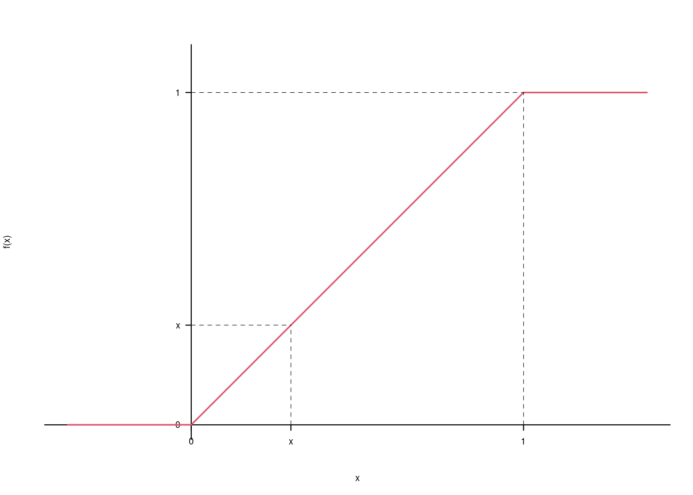
Ovvero la probabilità che \(X\leq x\) è l’area tra zero ed \(x\) della funzione a gradino. Per esempio \[ F(0.3)=P(X\leq 0.3) =(\text{base = 0.3})\times(\text{altezza = 1})=0.3 \]
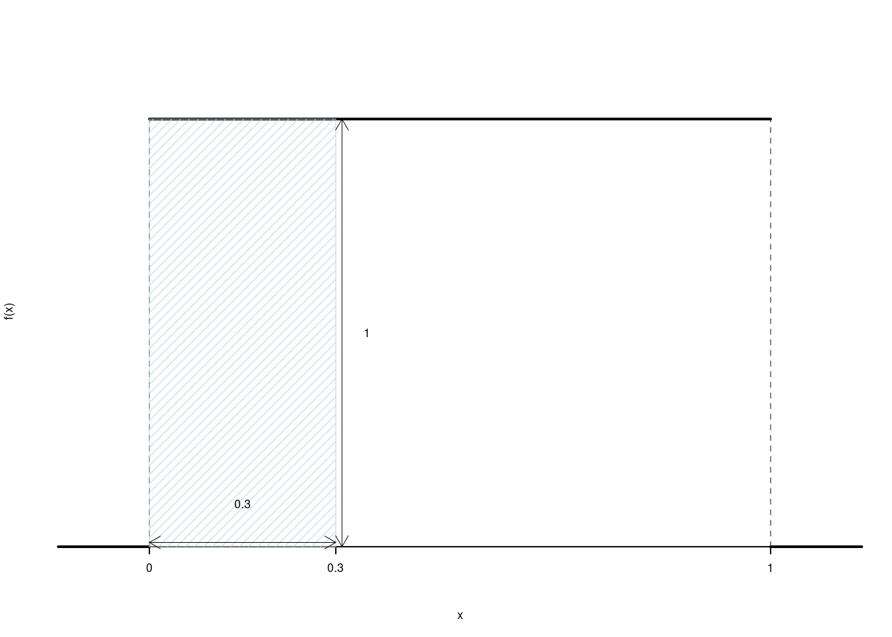
Il valore atteso è
\[\begin{eqnarray*} E(X) &=& \int_{-\infty}^{+\infty} xf(x)dx\\ &=& \int_{0}^{1} xdx\qquad\text{poiché $f$ vale 1 in [0,1] e 0 altrove}\\ &=& \left[\frac{x^2}2 \right]_0^1\\ &=& \frac {1^2}2 - \frac {0^2}2 \\ &=& \frac 12 \end{eqnarray*}\]
La varianza
\[\begin{eqnarray*} V(X) &=& E(X^2)-E^2(X)\\ E(X^2) &=& \int_{-\infty}^{+\infty} x^2f(x)dx\\ &=& \int_{0}^{1} x^2dx\qquad\text{poiché $f$ vale 1 in [0,1] e 0 altrove}\\ &=& \left[\frac{x^3}3 \right]_0^1\\ &=& \frac {1^3}3 - \frac {0^2}3 \\ &=& \frac 13 \\ V(X) &=& \frac 13-\left(\frac 12\right)^2\\ &=& \frac 13-\frac 14\\ &=& \frac{4-3}{12}\\ &=& \frac 1{12} \end{eqnarray*}\]
6.7 Operazioni sulle VC
Le VC sono numeri che non sappiamo in anticipo che valore avranno, quindi siamo autorizzati a fare operazioni. Sia \(X\) una VC con supporto \(S_X\) e funzione di probabilità \(f\). Se \(g:\mathbb{R}\to\mathbb{R}\), posto \[ Y = g(X) \] Allora \(Y\) è una VC.
Esempio 6.7 Sia \(X\) una VC con supporto \(\{-1,0,1\}\) r con funzione di probabilità \[ f(x)= \begin{cases} \frac 14,~~\text{se $x=-1$}\\ \frac 24,~~\text{se $x=\phantom-0$}\\ \frac 14,~~\text{se $x=+1$}\\ \end{cases} \] posto \[ Y=g(X)= 2 + 3X \] allora \[ S_Y = \{-1, 2, 5\} \] ovvero se \(x=-1\), \(y=2+3\times(-1)=-1\), se \(x=0\), \(y=2+3\times0=2\), se \(x=1\), \(y=2+3\times1=5\) e quindi
\[ f_Y(y)= \begin{cases} \frac 14,~~\text{se $y=-1$}\\ \frac 24,~~\text{se $x=+2$}\\ \frac 14,~~\text{se $x=+5$}\\ \end{cases} \]
Esempio 6.8 Sia \(X\) una VC con supporto \(\{-1,0,1\}\) r con funzione di probabilità \[ f(x)= \begin{cases} \frac 14,~~\text{se $x=-1$}\\ \frac 24,~~\text{se $x=\phantom-0$}\\ \frac 14,~~\text{se $x=+1$}\\ \end{cases} \] posto \[ Y=g(X)= X^2 \] allora \[ S_Y = \{0,1\} \] ovvero se \(x=-1\), \(y=(-1)^2=1\), se \(x=0\), \(y=0^2=0\), se \(x=1\), \(y=1^2=1\) e quindi \[ P(Y=0) = P(X=0) = \frac 24 = \frac 12\\ P(Y=1) = P(X=-1 \cup X = 1) = P(X=-1) + P(X = 1) = \frac 14+\frac14=\frac12 \]
\[ f_Y(y)= \begin{cases} \frac 12,~~\text{se $y=0$}\\ \frac 12,~~\text{se $y=1$}\\ \end{cases} \]
Esempio 6.9 Sia \(X\) una VC con supporto \(\{-1,0,1\}\) r con funzione di probabilità \[ f(x)= \begin{cases} \frac 14,~~\text{se $x=-1$}\\ \frac 24,~~\text{se $x=\phantom-0$}\\ \frac 14,~~\text{se $x=+1$}\\ \end{cases} \] posto \[ Y=g(X)= X^2 \] allora \[ S_Y = \{0,1\} \] ovvero se \(x=-1\), \(y=(-1)^2=1\), se \(x=0\), \(y=0^2=0\), se \(x=1\), \(y=1^2=1\) e quindi \[ P(Y=0) = P(X=0) = \frac 24 = \frac 12\\ P(Y=1) = P(X=-1 \cup X = 1) = P(X=-1) + P(X = 1) = \frac 14+\frac14=\frac12 \]
\[ f_Y(y)= \begin{cases} \frac 12,~~\text{se $y=0$}\\ \frac 12,~~\text{se $y=1$}\\ \end{cases} \]
Esempio 6.10 Sia \(X\) un VC continua con supporto \(S_X=[0,1]\) e funzione di densità \(f(x)\). Posto \[ Y=0.5+1.5\cdot X \] allora \[ S_Y=[0.5,2] \] infatti se \(X=0\) allora \(Y=0.5+1.5\cdot 0=0.5\), mentre se \(X=1\) allora \(Y=0.5+1.5\cdot 1=2\). 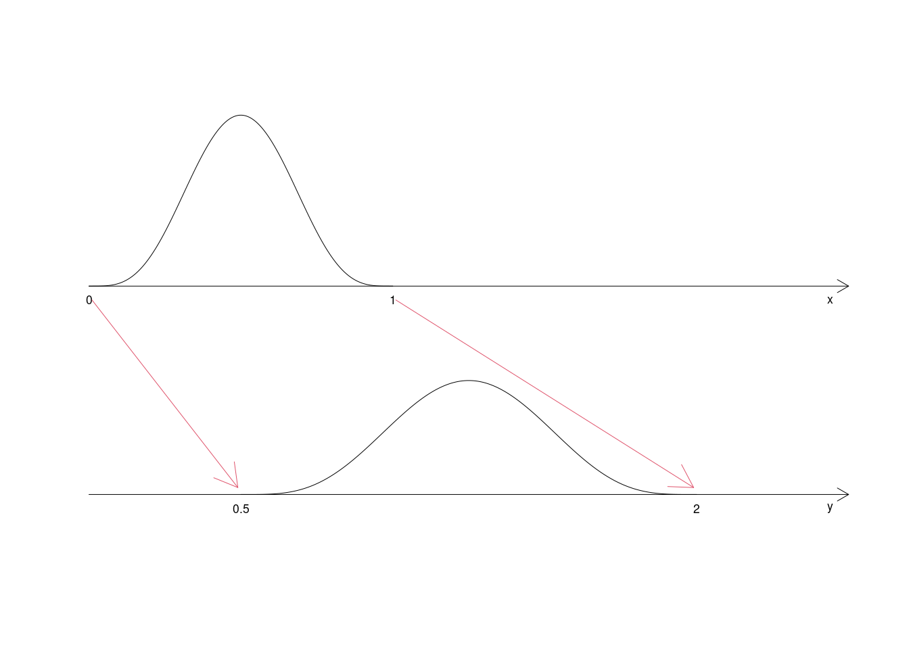